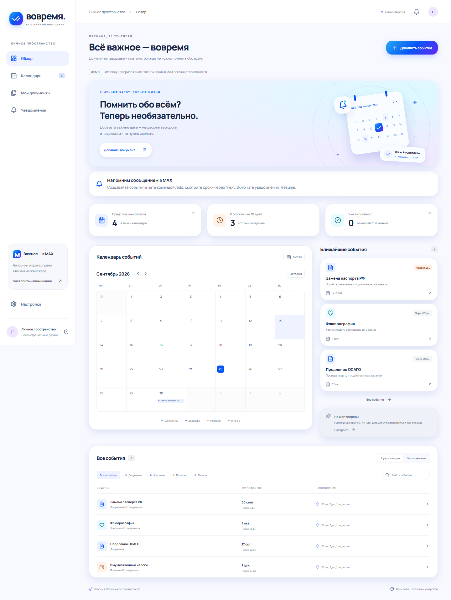

Бот MAX: [вставить подтверждённую ссылку]. В текущей конфигурации стоит отображаемое имя «Вовремя».
Репозиторий: github.com/nikeperl/MAX-hackaton
Коммит исходного кода:6550b9273d8f3844f3856b4f992f508b0774b395
Собственный API: https://84.237.53.134/api
Адрес из конфигурации; внешняя доступность ещё не подтверждена.
Локально:docker compose -f compose.demo.yaml up -d --buildhttp://localhost:3002
Проверка в MAX: /start → /passport 20.10.2006 20 → /time 9 Asia/Novosibirsk → /resume → /show код → /done код.
Учётные записи: свой MAX-профиль; логин/пароль приложения не требуются. В Docker-демо создаётся отдельный гостевой профиль.
Закрытый комплект доступа: MAX_BOT_TOKEN, MAX_WEBHOOK_SECRET, MAX_BOT_USERNAME, APP_URL. Рабочие значения передаются организаторам отдельно, не в Git.
API-контракт: openapi.json, DATA-API.yaml.
Примеры: tests/fixtures/events.json.
Черновик для сдачи: заполнить ссылку, команду и закрытый комплект доступа; подтвердить живой сценарий в MAX.
Вовремя сохраняет дату, напоминает в чате
и помогает понять следующий шаг к услуге.
Команда: [название и участники — заполнить перед сдачей]
Житель Новосибирской области 19–20 лет, пользуется MAX и готовится заменить паспорт по возрасту.
Регион и сегмент — выбор для пилота, а не ограничение федерального правила.
Даже когда услуга доступна онлайн, человеку нужно вовремя вспомнить о сроке, подготовиться и вернуться к следующему действию.
Частоту этой проблемы и готовность пользоваться помощником ещё нужно подтвердить интервью.
Кабинетный анализ: карточка услуги МФЦ НСО, официальный портал региона. Приём заявления и решение остаются у ведомства.
/passport
20.10.2006 20Расчёт: 18.01.2027
/time 9
Asia/Novosibirsk
/resumeСвоё местное время
Сообщение от бота
/show кодШаги и источник
Получить услугу
/done кодНапоминания прекращаются
/add; документы распознаются в мини-приложении.
Календарь и фильтры.
Создание и завершение.
Шаблоны сроков.
OCR фото и PDF.
Настройка уведомлений.
Холодный светлый фон, Manrope, белые карточки и градиент #26A9F4 → #0756F5 → #6825F4.
Поддерживаются мобильная ширина и десктоп. Проверку внутри реальных мобильного и веб-клиента MAX нужно завершить отдельно.
От /start до события с включёнными напоминаниями. Измеряем медиану времени на 20 участниках.
Самостоятельно создают напоминание и могут объяснить следующий шаг. Проверяем наблюдением и вопросом после /show.
В течение 5 минут после расчётного времени при работающем сервере. Измеряем историю доставок; это не показатель прочтения.
Сравним с текущим способом пользователя: ручным календарём или заметкой. Короткий пилот не доказывает снижение просрочек.
Сбор исследовательских метрик — отдельный протокол с согласия, без копирования текстов документов.
Команды в чате
React-календарь
Подпись MAX
Секрет webhook
Валидация
События
Входящая очередь
Доставки
Каждые 15 сек.
Повторы при сбое
Сообщение MAX
18 серверных тестов, 5 браузерных сценариев, сборка TypeScript/Vite и Docker. События сохраняются после перезапуска контейнера.
Живая доставка и доступность MAX. Диагностика API завершилась тайм-аутом; успешный локальный тест не означает отправленное пользователю сообщение.
MAX ID и имя, параметры события, дату рождения для расчёта паспорта, название файла, заметку, настройки и историю доставок.
Оригиналы документов и полный распознанный текст не отправляются на сервер. Фото/PDF обрабатываются в браузере.
Нет интеграций с ЕСИА, ЕГИСЗ и статусами заявлений. Демо синтетическое. OCR может ошибаться. Медицинский интервал задаётся по рекомендации врача; лечение не назначается.
Нужны согласия, правила хранения, защищённый хостинг и резервные копии перед пилотом с реальными данными.
Срок — расчёт по правилу или введённая дата. Рекомендация — следующий шаг. Официальное решение принимает ведомство. SQLite не шифруется самим приложением.
Возможные партнёры: студенческие сообщества, МФЦ. Договорённости пока отсутствуют. Правила проверяет ответственный редактор перед релизом и ежемесячно.
Положение о паспорте, пункты 24 и 27
Требования: предоставленный PDF «Забота о людях», стр. 6–19. Проверка источников: 25.09.2026.
Подтвердить ссылку на бота и доступность HTTPS. Пройти сценарий в обоих клиентах MAX и получить плановое сообщение.
Заполнить команду и закрытые параметры доступа для организаторов.
Указать финальный commit hash материалов. Сдаваемую версию после дедлайна не изменять.
Подробный отчёт: docs/requirements-review.md. Проверка: docs/verification.md.